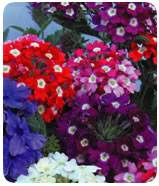

价格：9元/包 15元/克
【概况】美女樱又名草五色梅，为马鞭草科马鞭草属植物。美女樱植株矮生，茎叶匍匐，花色丰富，着花繁盛，花期又长，是理想的盆栽和花坛植物。
欧洲从18世纪中叶开始引种石蚕美女樱（V．teucrioides）以来，通过种间杂交育种，选育出至今的美女樱。从最初的小花和淡紫色，培育成大花和色彩丰富的美女樱众多栽培品种。目前，在欧美等国及日本广泛用于盆栽观赏、吊盆装饰和布置花坛。由于繁殖容易，栽培简便，景观效果显著，近年来在欧美发展很快，新品种不断上市。不断推出大花、抗病、耐寒品种，其种子和盆花大量出口世界各地。至今，美女樱的生产基本上是规模化和产业化。
我国美女樱的栽培比较晚，20世纪80年代以前仅是沿海大城市的公园和植物园从欧美引种作园内的景观布置，没有投入商品性生产。80年代以后，才从美国、日本大量引进商品性品种，开始批量生长。种子中国提醒您：至今，美女樱盆栽花卉已广泛用于景观布置、节日摆放和家庭室内点缀。
【形态特征与品种】美女樱为多年生草本，常作一年生栽培。茎4棱，枝条横展，基部呈匍匐状，全株被灰色柔毛。叶对生，长圆形，边缘有明显的锯齿。穗状花序顶生，多数小花密集排列呈伞房状。花冠筒状，花色有蓝、紫、粉红、大红、白、玫瑰红等。花冠中央有明显的白色或浅色的圆形"眼"。常见品种有直立类型的诺瓦利斯（Novalis）系列，株高20～25厘米，早花类，花枝密集，具较大的白色"眼"，花期长，耐热。其中以花蓝色具白眼品种最有名。横展类型有石英（Quartz）系列，茎叶健壮，成苗率高，抗病品种，花色有白、玫瑰红、绯红、深红等。传奇（Romance）系列，株高20～25厘米，早花种，矮生，花色有白、深玫瑰红、鲜红、紫红、粉，具白眼。坦马里（Temari）系列，大花种，宽叶，分枝性好，花朵紧凑，抗病和耐－10℃低温。迷案（ObsessionFormula）系列，是美女樱中开花最早的品种，基部分枝性强，抗病，花期长，有7种花色。塔皮恩（Tapien）系列，均为抗病、耐寒品种，其中紫色塔皮恩（TapienLavender）花紫红色，耐－10℃低温；粉蓝塔皮恩（TapienPowderBlue）花浅蓝色，抗病、耐寒品种。另外还有矮宝石（DwarfJewels）、蓝泻湖（BlueLagoon）、火焰（Blaze）和展时（Showtime）等品种。
同属观赏种有深裂美女樱（V．tenuisecta），其中开淡紫花的英币星（SterlingStar）和开蓝紫花的想象（Imagination）都有着较好的观赏性。另外还有直立美女樱（V．rigida）、细叶美女樱（V．tenera）和加拿大美女樱（V．canadensis）。
【生物学特性】美女樱原产巴西、秘鲁和乌拉圭等地。喜温暖、湿润和阳光充足环境。
美女樱是较耐寒的草本，适应性较强。生长温度为5～25℃，最适温度16℃。冬季温度可耐－5℃，荷兰和美国已育成耐－10℃的美女樱品种。夏季高温对美女樱生长不利，温度超过30℃，植株生长停滞。但荷兰最近又推出耐热品种，使美女樱在夏季照常开花不断。
美女樱在生长过程中对水分比较敏感，怕干旱又忌积水。幼苗期盆土必须保持湿润，有利于幼苗生长。成苗后耐旱性加强，如气温高，耗水量大，要注意保证充足水分。若阴雨天较多时，轻者枝蔓徒长细弱，开花减少，重者茎叶逐渐萎蔫，甚至死亡。
光照对美女樱的生长发育十分重要。种子中国提醒您：美女樱从幼苗生长到开花均需充足阳光，茎叶生长健壮，花枝密集，开花不断，花色鲜艳。若长期处于半阴状态或光照不足，茎叶容易徒长，开花减少，花朵变小，花色不鲜艳。
土壤用肥沃、疏松和排水良好的培养土、泥炭土和粗沙组成的混合基质，pH在6．0～6．5。
【繁殖方法】常用播种和扦插繁殖。
播种繁殖：春、秋季均可进行。春季以室内盆播为主，每克种子350～390粒，发芽适温为20～22℃，播种后不需覆上，撒浅层蛭石，既保湿又透光，有助于种子发芽，播后14～20天发芽，30天后幼苗可移栽，保持室温10℃。
扦插繁殖：以5～7月为宜。剪取稍成熟枝条，长8～10厘米，插于沙床，室温在15～18℃，稍加遮荫，插后14～21天可生根，30天可移栽上盆。
美女樱茎节匍匐生长，茎节容易受湿生根，应用压条繁殖，效果很好，成活率高。
【栽培管理】幼苗7～8厘米高时定植于12～15厘米盆，每盆可栽3株。吊盆栽培用25厘米盆，用5株苗。对分枝性强的优良品种不需摘心，对分枝性差的品种在苗高10～12厘米时，进行1次摘心，促使分枝。生长期每半月施肥1次或使用"卉友"20－20－20通用肥。如生长过程中，花枝过长可适当修剪，控制株形，促使多分枝、多开花。
【病虫害防治】主要有白粉病和霜霉病危害，可用70％甲基托布津可湿性粉剂1000倍液喷洒。虫害有蚜虫和粉虱危害，用2．5％鱼藤精乳油1000倍液喷杀。
【产后处理】美女樱花期长、花色丰富，适合盆栽和吊盆栽培，装饰窗台、阳台和走廊，鲜艳雅致，富有情趣。如成群摆放公园入口处、广场花坛、街旁栽植槽、草坪边缘，清新悦目，充满自然和谐的气息。在作为商品盆花的运输过程中，易遭乙烯毒害，发生花蕾、花和花瓣脱落，可在上市前14～21天用0．3～0．4毫摩尔／升的硫代硫酸银喷洒1次，有最佳的效果。